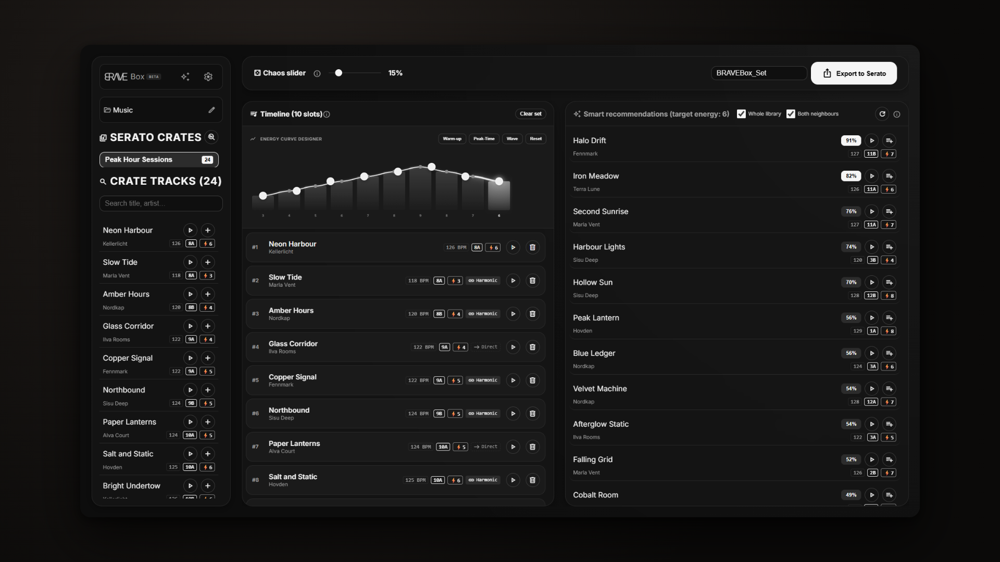
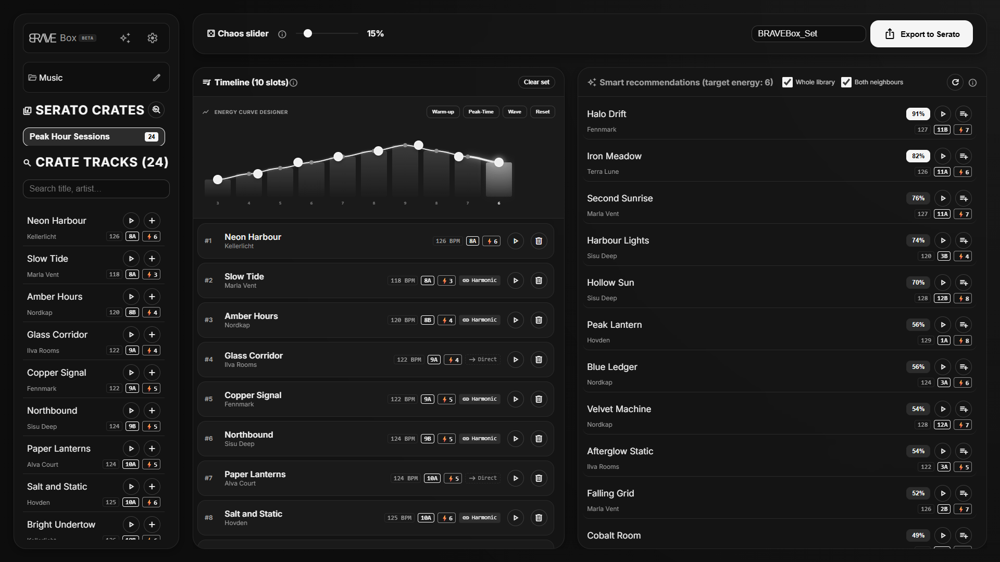
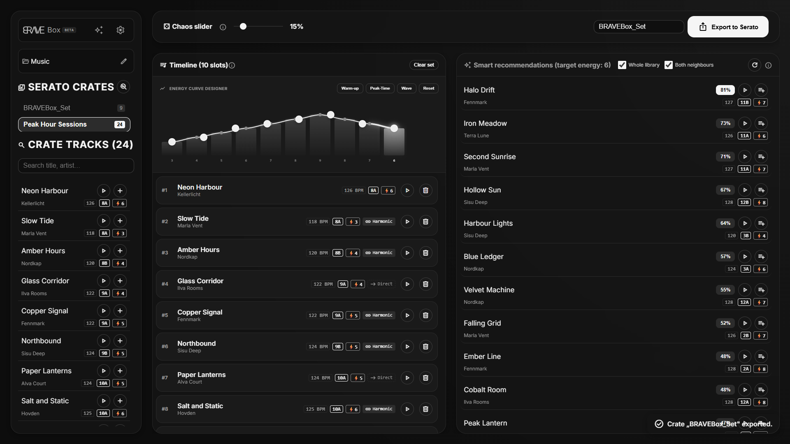

Turn Serato crates into a gig-ready set.
BRAVE Box reads your existing Serato crates, you compile your playlist on one timeline — and export the result back to Serato DJ Pro as a .crate file. Your audio files stay untouched.
Windows · current beta via GitHub Releases · free to use during beta

In short
Serato-native
Reads and writes the Serato .crate format directly in your _Serato_ folder — no detours through other tools.
Harmonic mixing
Camelot and BPM analysis suggests fitting transitions — including German key spellings.
Rediscover gems
“Forgotten Gems” brings long-unplayed tracks back into your sets.
Current beta features
Everything below ships in the app today. What is not in yet is stated honestly.
Crate parsing
Read existing Serato crates — with track paths, metadata and matching, even for moved files.
Playlist builder
Filter tracks, arrange a set on one timeline, write it back to Serato as a new .crate file.
Key & BPM matching
Camelot compatibility, BPM and energy matching with a recommendation score per track.
3-track journeys
Find bridges across three tracks when two tracks do not mix directly.
Energy curve
Paint your dramaturgy as a curve — presets for warmup, peak and wave, plus custom curves.
Preview player
Audition tracks right in the app before they make the set.
Auto-sorting experimental
Batch analysis with category filters and proposal crates — currently flagged as experimental.
German & English
Full UI in two languages, switchable in settings.
Rekordbox export
Migration to Rekordbox 7 and direct USB export are planned as an update — not in this beta.
How it works
- 1
Load
Point BRAVE Box at your Serato crates and pick the crates to work from.
- 2
Curate
Arrange tracks on one timeline — with matching suggestions, energy curve and gem finds.
- 3
Export
Write a new
.cratefile and load it straight into Serato DJ Pro.
Screenshots from the app
Real beta screenshots — no mockups.


System requirements
| Operating system | Windows 10 / 11 (64-bit). macOS and Linux are planned. |
|---|---|
| DJ software | Serato DJ Pro with an existing library (_Serato_ folder). |
| Updates | Automatic via GitHub Releases (Velopack). |
| Privacy | Music data stays local. Telemetry only with explicit consent. |
Note: the beta setup is not digitally signed. Windows SmartScreen therefore shows a warning (“Unknown publisher”) on first launch — normal for unsigned betas. Signing is on the roadmap.
Pricing
Beta: free
The current beta is free to use. Final pricing is undecided and will be published here once set — including VAT, no hidden costs.
FAQ
Can BRAVE Box migrate to Rekordbox?
Not yet. Rekordbox 7 migration and direct USB export for CDJ/XDJ are planned as an update, with no date. The beta handles Serato crates only.
Does the app modify my music files?
No. BRAVE Box reads crate files and metadata and writes new .crate files. Audio files are never touched. Still: back up your library before a gig, as always.
What happens after the beta?
The beta is free. Final pricing is undecided. Updates arrive automatically via GitHub Releases.
Does BRAVE Box run on Mac or Linux?
Windows 10/11 only for now. macOS and Linux support is planned.
What data does the app send?
None by default. Usage and crash data (telemetry) is transmitted only after your explicit consent at first launch and can be revoked anytime in settings. See the privacy policy.
Where do I get help?
By email, via GitHub issues, or in the community at r/BRAVEBOX — please include OS, BRAVE Box version and Serato version.
Ready for tidy crates?
Grab the free Windows beta and build your next set on one timeline.
Windows · current beta via GitHub Releases · See system requirements for the SmartScreen note